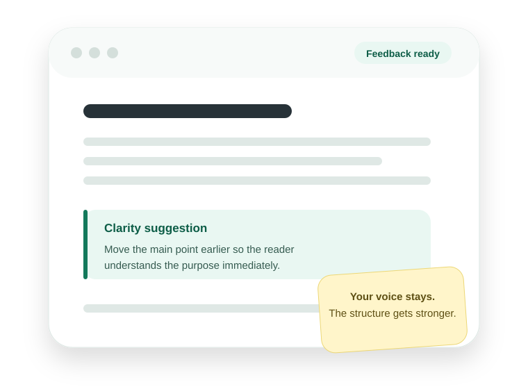

✓
Ethical Editing
Feedback that strengthens clarity, structure, and flow while preserving your voice.
Structora helps students and professionals improve their own work through practical feedback, structured editing, and educational resources.
Clear feedback. Ethical editing. No ghostwriting.

Practical resources for people who want to become clearer, more confident writers.
Feedback that strengthens clarity, structure, and flow while preserving your voice.
Clear explanations for admissions writing, academic work, and professional communication.
Useful checklists and practical resources that make revision easier and more focused.
Guidance for career changers, adult students, and applicants with a nontraditional path.
Turn experience, responsibility, and a nontraditional path into a focused admissions narrative.
Read the guide → Adult studentsA practical look at time, cost, career value, and the real arithmetic behind returning to school.
Read the guide → AdmissionsAddress context directly, show evidence of growth, and keep the focus on readiness.
Read the guide →The goal is not simply to improve one document. It is to help you recognize patterns and revise with more confidence next time.
Suggestions strengthen your ideas without replacing your voice.
You see what changed, why it matters, and how to apply it elsewhere.
Adult students, ESL professionals, and career changers are treated as capable writers with real experience.
Explore Structora’s writing guides, ethical editing approach, and practical resources.